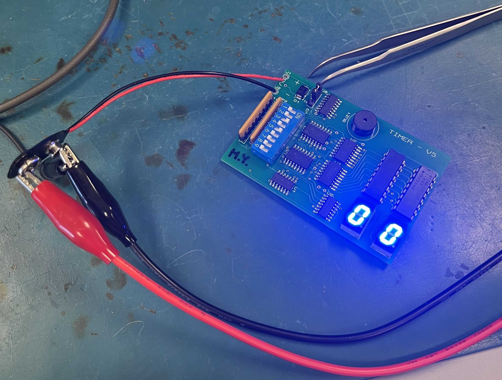
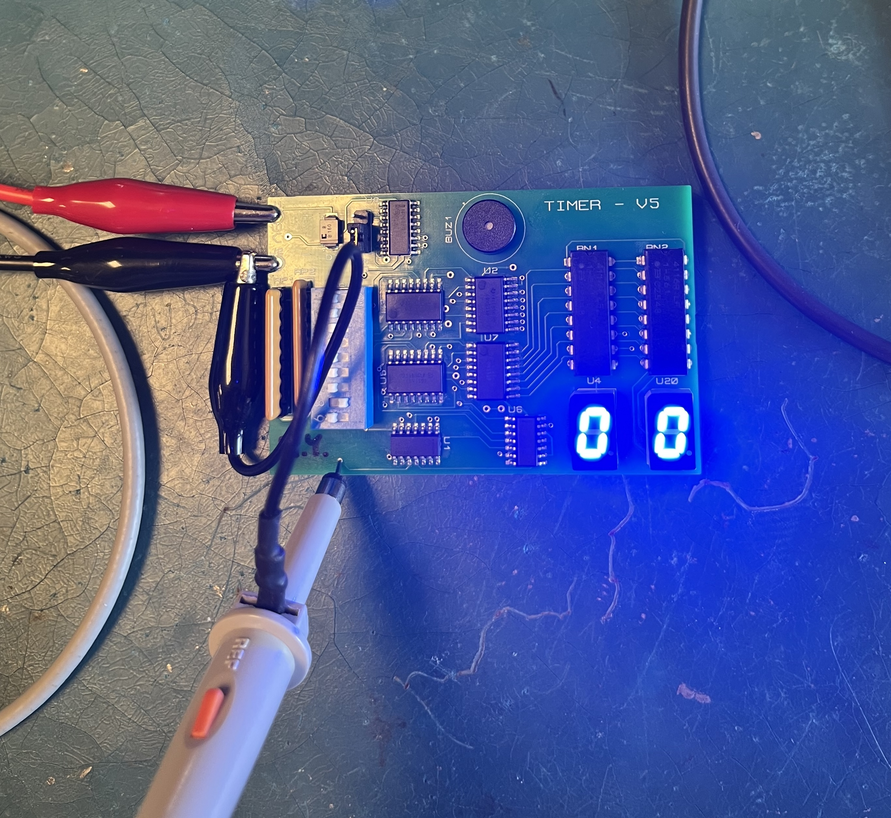
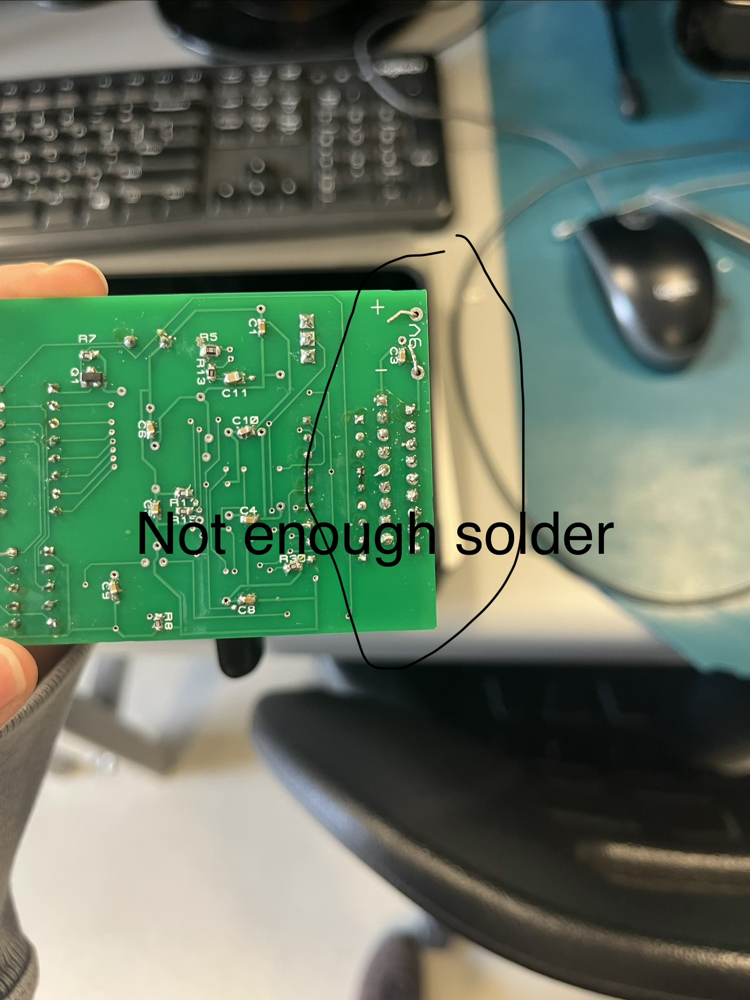

What This Lab Is About
Lab A introduces PCB assembly by building a digital timer circuit. The timer board contains surface-mount and through-hole components, including logic ICs, seven-segment displays, a DIP switch, resistor networks, a MOSFET, and a buzzer.
After assembly, the PCB is powered, tested, and debugged using laboratory instruments such as a DMM and oscilloscope. The lab also introduces signal tracing and shows how different sections of a digital circuit work together.

What I Learned
Identifying and Placing Components
- Components must be installed in their correct PCB locations.
- Some components are polarized or orientation-sensitive, so their pin-1 and polarity markings must be checked before soldering.
A Good Solder Joint
A good solder joint should:
- Look shiny, smooth, and clean.
- Completely connect the component lead to the PCB pad.
- Have approximately the shape of a tiny Hershey’s Kiss.
- Use enough solder to create a secure connection without forming a large blob.
- Not touch neighbouring pads or pins.
A dull, cracked, uneven, or ball-shaped joint may indicate a cold or poorly formed solder joint. Too much solder can create a solder bridge and short adjacent connections.
Testing and Debugging
- The timer is powered using a 9 V supply.
- In LOAD mode, a starting value can be loaded using the DIP switches, and the clock does not run because U8 is held in reset.
- In RUN mode, the clock runs and the counters decrement toward
00. - When the timer reaches
00,COUNT_DONEactivates, the counters stop, and the buzzer circuit is enabled. - An oscilloscope can be used to observe signals such as
CLOCK,BCD_B_COUTn,COUNT_DONE,BUZZ, andBUZZ_Q_R.
Buzzer Circuit
BUZZis a slower control signal that drives the gate of MOSFET Q1.- When Q1 turns on, it provides a current path through the buzzer.
BUZZ_Q_Ris measured at the drain of Q1.- The buzzer has an internal oscillator that operates much faster to produce sound. This internal oscillator causes the higher-frequency waveform measured at BUZZ_Q_R.
Current Progress
- Identified the main PCB components
- Learned how to use a soldering iron and solder wire
- Finished soldering the PCB components
- Inspected the solder joints
- Powered and tested the timer
- Confirmed that the timer counts down to
00 - Debugged the buzzer circuit
- Confirmed that the buzzer activates
- Practised measuring signals with an oscilloscope
Probing the Timer Board Using Proteus
- Right-click the net you want to probe in the schematic capture.
- Highlight the net in the PCB layout to locate an accessible probing point.
- Probe that point on the physical board to observe the waveform on the oscilloscope.
Problems and Troubleshooting
Buzzer Did Not Initially Work
The timer counted correctly, but the buzzer did not activate at first. When I pressed down on Q1(mosfet), the buzzer started working. This indicated that one or more MOSFET pins were not making a reliable electrical connection with the PCB pads.
The solder joints around Q1 needed to be inspected and corrected. This demonstrated how an incomplete solder joint can cause a circuit to work intermittently when physical pressure is applied.
Unexpected Fast-Clock Measurement
The slow clock mode measured correctly at approximately 1 Hz. However, the fast mode measured approximately 34 Hz instead of the expected 16 Hz.

Feedback from Lab Instructor
